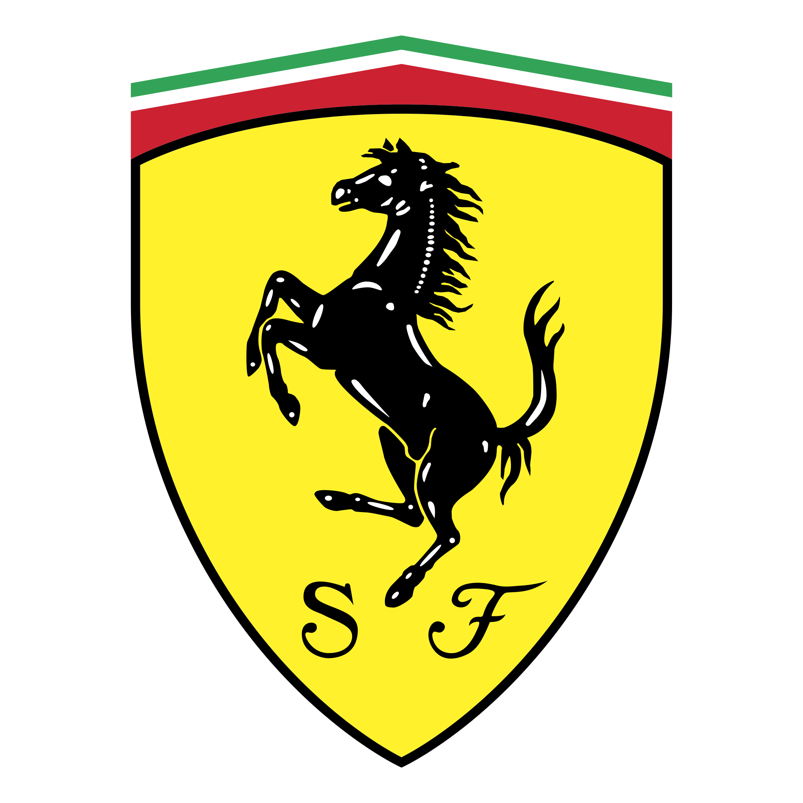
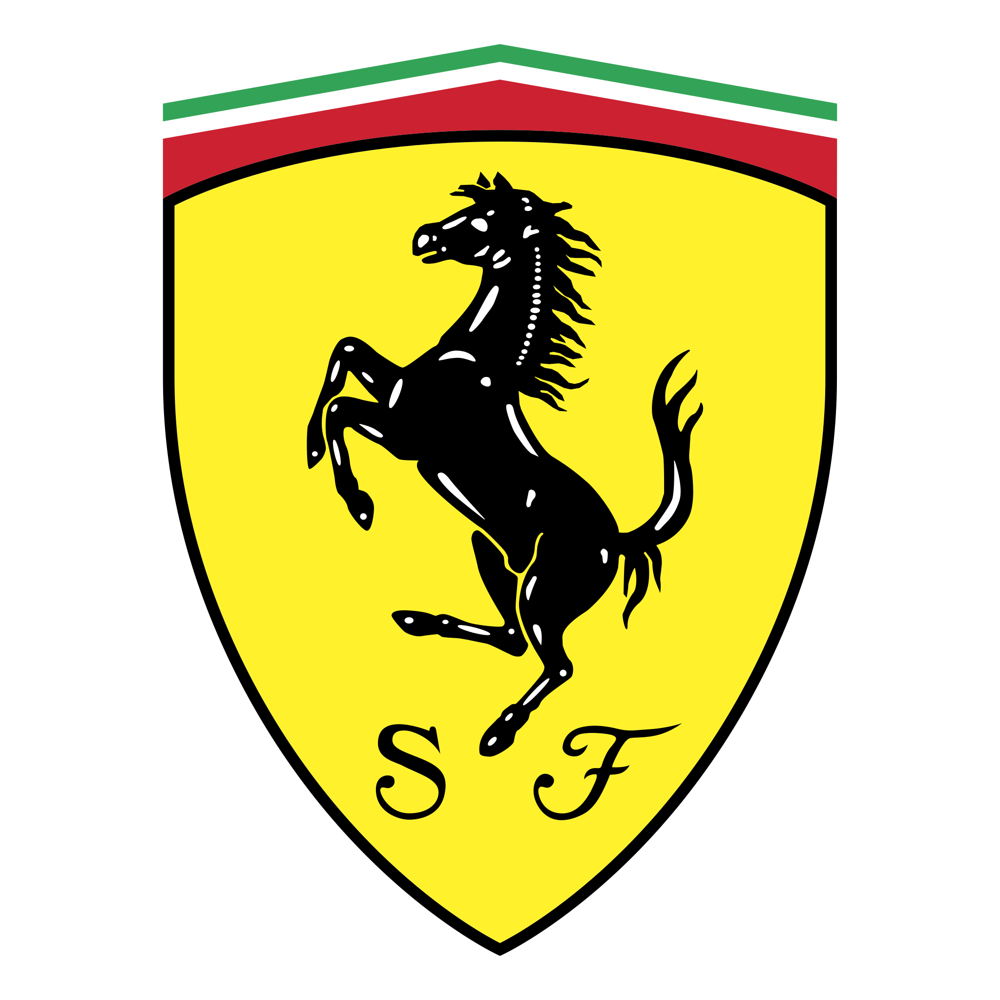

About the Iceman
Kimi-Matias Räikkönen (born 17 October 1979), nicknamed "The Iceman", is a Finnish racing driver who competed in Formula One between 2001 and 2021 for Sauber, McLaren, Ferrari, Lotus, and Alfa Romeo. Räikkönen won the 2007 Formula One World Championship driving for Scuderia Ferrari, their latest World Drivers' Championship to date. In addition to this title, he also finished second overall in 2003 and 2005, and third in 2008, 2012 and 2018. With 103 podium finishes, he is one of only five drivers to have taken over 100 podiums. Räikkönen has won 21 Grands Prix, making him the most successful Finnish driver in terms of Formula One race wins, and is the only driver to win in the V10, V8 and the V6 turbo hybrid engine eras. After nine seasons racing in Formula One, he left the sport to compete in the World Rally Championship in 2010 and 2011, returning to drive a further ten seasons in Formula One from 2012 until 2021. He is known for his reserved personality and reluctance to participate in public relations. At the 2020 Eifel Grand Prix, he broke the record for most starts in Formula One. He currently competes part-time in the NASCAR Cup Series, driving the No. 91 Chevrolet Camaro ZL1 for Trackhouse Racing.
Räikkönen entered Formula One as a regular driver for Sauber-Petronas in 2001, having competed in only 23 car races previously. He joined McLaren-Mercedes in 2002, and became a title contender by finishing runner-up in the championship to Michael Schumacher in 2003, and Fernando Alonso in 2005. Räikkönen's seasons at McLaren were plagued by severe unreliability from his cars, prompting a move to Ferrari in 2007. This change saw him crowned Formula One World Drivers' Champion that season, pipping both McLaren drivers—Lewis Hamilton and Alonso—to the title by one point. In 2008, he equalled the record for the greatest number of fastest laps in a season for the second time.
Räikkönen left both Scuderia Ferrari and the sport after the 2009 season, his sole victory that year having come in that season's Belgian Grand Prix due to driving an uncompetitive Ferrari F60. On his return to Formula One, Räikkönen drove for Lotus in 2012 and 2013, scoring the team's only victories. In September 2013, Ferrari announced his re-signing on a two-year contract, beginning in the 2014 season. This contract was subsequently extended until the end of the 2018 season. During his second Ferrari stint, Räikkönen scored 26 podiums, two pole positions, and a victory at the 2018 United States Grand Prix, 113 Grands Prix after his last victory. Räikkönen finished among the top four overall in the championship on multiple occasions during his second Ferrari stint, finishing his total eight-year long Ferrari career with a third place in the 2018 championship. Räikkönen left Ferrari at the end of the 2018 season, and moved to Alfa Romeo Racing on a two-year contract, later extending it until the end of 2021, after which he retired from Formula One.
Read more about Kimi on Wikipedia
Kimi has driven for:

 
